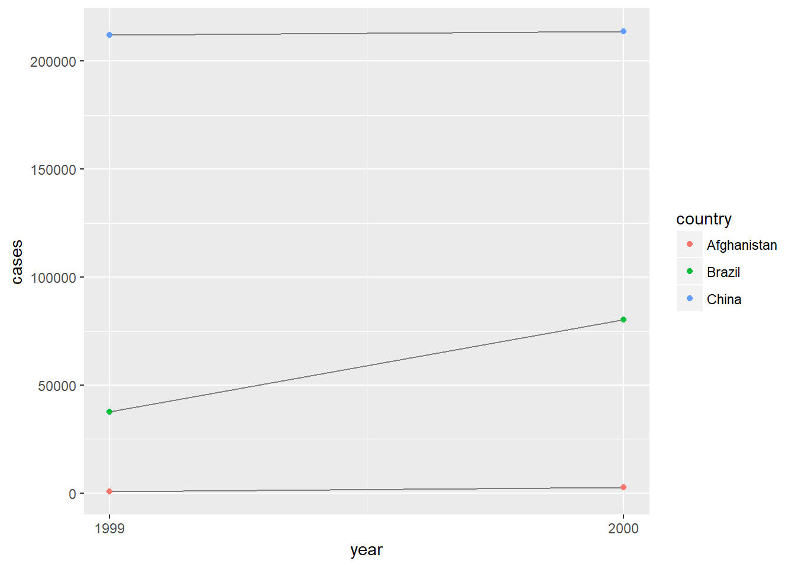

12 Tidy data
12.1 Introduction
No exercises.
12.2 Tidy data
12.2.1 Exercises
library(tidyverse)1- Using prose, describe how the variables and observations are organised in each of the sample tables.
In table1, each observation has its own row and each variable has its own column.
## # A tibble: 6 x 4
## country year cases population
## <chr> <int> <int> <int>
## 1 Afghanistan 1999 745 19987071
## 2 Afghanistan 2000 2666 20595360
## 3 Brazil 1999 37737 172006362
## 4 Brazil 2000 80488 174504898
## 5 China 1999 212258 1272915272
## 6 China 2000 213766 1280428583In table2, each row represents the country, year, and the variable type of either case or population. The variable count represents the unique value for the variable type.
## # A tibble: 12 x 4
## country year type count
## <chr> <int> <chr> <int>
## 1 Afghanistan 1999 cases 745
## 2 Afghanistan 1999 population 19987071
## 3 Afghanistan 2000 cases 2666
## 4 Afghanistan 2000 population 20595360
## 5 Brazil 1999 cases 37737
## 6 Brazil 1999 population 172006362
## 7 Brazil 2000 cases 80488
## 8 Brazil 2000 population 174504898
## 9 China 1999 cases 212258
## 10 China 1999 population 1272915272
## 11 China 2000 cases 213766
## 12 China 2000 population 1280428583In table3, the variables case and count are mutated into a new variable rate.
## # A tibble: 6 x 3
## country year rate
## * <chr> <int> <chr>
## 1 Afghanistan 1999 745/19987071
## 2 Afghanistan 2000 2666/20595360
## 3 Brazil 1999 37737/172006362
## 4 Brazil 2000 80488/174504898
## 5 China 1999 212258/1272915272
## 6 China 2000 213766/1280428583In table4, cases and population are represented in separate tables. Years 1999 and 2000 are treated as different variables.
## # A tibble: 3 x 3
## country `1999` `2000`
## * <chr> <int> <int>
## 1 Afghanistan 745 2666
## 2 Brazil 37737 80488
## 3 China 212258 213766## # A tibble: 3 x 3
## country `1999` `2000`
## * <chr> <int> <int>
## 1 Afghanistan 19987071 20595360
## 2 Brazil 172006362 174504898
## 3 China 1272915272 12804285832 - Compute the rate for table2, and table4a + table4b. You will need to perform four operations:
1. Extract the number of TB cases per country per year. 2. Extract the matching population per country per year. 3. Divide cases by population, and multiply by 10000. 4. Store back in the appropriate place.
Which representation is easiest to work with? Which is hardest? Why?
Using only the techniques covered so far, for table2:
countries <- filter(table2, type == 'cases')$country
years <- filter(table2, type == 'cases')$year
cases <- filter(table2, type == 'cases')$count
populations <- filter(table2, type == 'population')$count
table2_rate <- tibble(country = countries,
year = years,
rate = cases/populations * 10000)
table2_rate## # A tibble: 6 x 3
## country year rate
## <chr> <int> <dbl>
## 1 Afghanistan 1999 0.373
## 2 Afghanistan 2000 1.29
## 3 Brazil 1999 2.19
## 4 Brazil 2000 4.61
## 5 China 1999 1.67
## 6 China 2000 1.67and table4a + table4b:
countries <- table4a$country
cases_1999 <- table4a$`1999`
cases_2000 <- table4a$`2000`
populations_1999 <- table4b$`1999`
populations_2000 <- table4b$`2000`
table_1999_rate <- tibble(country = countries,
year = 1999,
rate = cases_1999 / populations_1999 * 10000)
table_2000_rate <- tibble(country = countries,
year = 2000,
rate = cases_2000 / populations_2000 * 10000)
table4_rate <- rbind(table_1999_rate, table_2000_rate) %>% arrange(country)
table4_rate## # A tibble: 6 x 3
## country year rate
## <chr> <dbl> <dbl>
## 1 Afghanistan 1999 0.373
## 2 Afghanistan 2000 1.29
## 3 Brazil 1999 2.19
## 4 Brazil 2000 4.61
## 5 China 1999 1.67
## 6 China 2000 1.67‘table2’ is much more easier to work with, and involves less intermediate steps.
3 - Recreate the plot showing change in cases over time using table2 instead of table1. What do you need to do first?
We need to first filter table2 to include only the rows for cases.
table2 %>% filter(type == 'cases') %>%
ggplot(aes(x = year, y= count)) +
geom_line(mapping = aes(group = country),
color = 'grey50') +
geom_point(mapping = aes(color = country)) +
labs(y = 'cases') +
scale_x_continuous(breaks = (c(1999,2000)))
12.3 Spreading and gathering
12.3.1 Exercises
1 - Why are gather() and spread() not perfectly symmetrical?
Carefully consider the following example:
## # A tibble: 4 x 3
## half year return
## <dbl> <chr> <dbl>
## 1 1.00 2015 1.88
## 2 2.00 2015 0.590
## 3 1.00 2016 0.920
## 4 2.00 2016 0.170(Hint: look at the variable types and think about column names.)
Both spread() and gather() have a convert argument. What does it do?
spread() and gather() are complements but might produce tibbles that are not perfectly symmetrical. Comparing the original stocks and with the maniuplated one:
stocks## # A tibble: 4 x 3
## year half return
## <dbl> <dbl> <dbl>
## 1 2015 1.00 1.88
## 2 2015 2.00 0.590
## 3 2016 1.00 0.920
## 4 2016 2.00 0.170We see that the column positions different. We can show that in the intermediate spread() step, half becomes the first column, and 2015 and 2016 become the second and third column:
stocks %>%
spread(year, return)## # A tibble: 2 x 3
## half `2015` `2016`
## <dbl> <dbl> <dbl>
## 1 1.00 1.88 0.920
## 2 2.00 0.590 0.170Consequently, the column half stays in the first column after gather().
In addition to the positions of columns, the data type for year was converted from dbl to chr. In the intermediate step, spread(), 2015 and 2016 became the names of the variables. So when using gather(), 2015 and 2016 were naturally treated as strings, and the variable type for year became chr.
To override this behavior, we can add convert = TRUE in gather(). It is useful if the column names are actually numeric, integer, or logical.
stocks %>%
spread(year, return) %>%
gather("year", "return", `2015`:`2016`, convert = TRUE)## # A tibble: 4 x 3
## half year return
## <dbl> <int> <dbl>
## 1 1.00 2015 1.88
## 2 2.00 2015 0.590
## 3 1.00 2016 0.920
## 4 2.00 2016 0.1702 - Why does this code fail?
table4a %>%
gather(1999, 2000, key = "year", value = "cases")
#> Error in combine_vars(vars, ind_list): Position must be between 0 and nWe need to add backticks around 1999 and 2000 since the variable names are numeric and hence non-syntatic.
table4a %>%
gather(`1999`, `2000`, key = "year", value = "cases")## # A tibble: 6 x 3
## country year cases
## <chr> <chr> <int>
## 1 Afghanistan 1999 745
## 2 Brazil 1999 37737
## 3 China 1999 212258
## 4 Afghanistan 2000 2666
## 5 Brazil 2000 80488
## 6 China 2000 2137663 - Why does spreading this tibble fail? How could you add a new column to fix the problem?
people <- tribble(
~name, ~key, ~value,
#-----------------|--------|------
"Phillip Woods", "age", 45,
"Phillip Woods", "height", 186,
"Phillip Woods", "age", 50,
"Jessica Cordero", "age", 37,
"Jessica Cordero", "height", 156
)Spreading this tibble will fail because there are duplicated rows, i.e., there are two rows of “Phillip Woods” with key “age”. In other words, a single cell cannot be both 45 and 50 at the same time. We can add a new column to to make those rows to be not duplicates.
people %>%
group_by(name, key) %>%
mutate(id = row_number())## # A tibble: 5 x 4
## # Groups: name, key [4]
## name key value id
## <chr> <chr> <dbl> <int>
## 1 Phillip Woods age 45.0 1
## 2 Phillip Woods height 186 1
## 3 Phillip Woods age 50.0 2
## 4 Jessica Cordero age 37.0 1
## 5 Jessica Cordero height 156 1Now we can use spread():
people %>%
group_by(name, key) %>%
mutate(id = row_number()) %>%
spread(key = "key", value = "value") %>%
select(-id)## # A tibble: 3 x 3
## # Groups: name [2]
## name age height
## <chr> <dbl> <dbl>
## 1 Jessica Cordero 37.0 156
## 2 Phillip Woods 45.0 186
## 3 Phillip Woods 50.0 NA4 - Tidy the simple tibble below. Do you need to spread or gather it? What are the variables?
preg <- tribble(
~pregnant, ~male, ~female,
"yes", NA, 10,
"no", 20, 12
)This simple tibble appears to represent three observations:
1 - pregnant female of some value 10 2 - non-pregnant male of some value 20 3 - non-pregnant female of some value 12
We can use gather():
preg %>%
gather(key = 'gender', value = 'value', 2:3)## # A tibble: 4 x 3
## pregnant gender value
## <chr> <chr> <dbl>
## 1 yes male NA
## 2 no male 20.0
## 3 yes female 10.0
## 4 no female 12.012.4 Separating and uniting
12.4.1 Exercises
1 - What do the extra and fill arguments do in separate()? Experiment with the various options for the following two toy datasets.
extra controls what happens when the separated pieces are more than the number of variables defined in into. The default option is warn, which shows a warning and drops extra pieces. The option drop drops extra pieces without giving a warning.
tibble(x = c("a,b,c", "d,e,f,g", "h,i,j")) %>%
separate(x, c("one", "two", "three"), extra = 'drop')## # A tibble: 3 x 3
## one two three
## <chr> <chr> <chr>
## 1 a b c
## 2 d e f
## 3 h i jThe last option merge will only split at most length(into) times.
tibble(x = c("a,b,c", "d,e,f,g", "h,i,j")) %>%
separate(x, c("one", "two", "three"), extra = 'merge')## # A tibble: 3 x 3
## one two three
## <chr> <chr> <chr>
## 1 a b c
## 2 d e f,g
## 3 h i jfill is similar to extra, except it controls what happens if the separated pieces are less than the number of variables defined in into. By default, it fills with NA on the right and gives a warning. The option right fills with NAs on the right without a warning.
tibble(x = c("a,b,c", "d,e", "f,g,i")) %>%
separate(x, c("one", "two", "three"), fill = 'right')## # A tibble: 3 x 3
## one two three
## <chr> <chr> <chr>
## 1 a b c
## 2 d e <NA>
## 3 f g iThe option left fills with NAs on the left.
tibble(x = c("a,b,c", "d,e", "f,g,i")) %>%
separate(x, c("one", "two", "three"), fill = 'left')## # A tibble: 3 x 3
## one two three
## <chr> <chr> <chr>
## 1 a b c
## 2 <NA> d e
## 3 f g i2 - Both unite() and separate() have a remove argument. What does it do? Why would you set it to FALSE?
The remove argument is set to TRUE by default. It removes input columns from output data frame. If set to FALSE, the original separate column, or the united columns, are retained in the output.
In table3, the year column is separated into century and year, but is retained in the output.
table3 %>%
separate(year, into = c("century", "year"), sep = 2, remove = FALSE)## # A tibble: 6 x 4
## country rate century year
## * <chr> <chr> <chr> <chr>
## 1 Afghanistan 745/19987071 19 99
## 2 Afghanistan 2666/20595360 20 00
## 3 Brazil 37737/172006362 19 99
## 4 Brazil 80488/174504898 20 00
## 5 China 212258/1272915272 19 99
## 6 China 213766/1280428583 20 00In table5, the century and year columns are united as new, but are retained in the output.
table5 %>%
unite(new, century, year, sep = "", remove = FALSE)## # A tibble: 6 x 5
## country new century year rate
## * <chr> <chr> <chr> <chr> <chr>
## 1 Afghanistan 1999 19 99 745/19987071
## 2 Afghanistan 2000 20 00 2666/20595360
## 3 Brazil 1999 19 99 37737/172006362
## 4 Brazil 2000 20 00 80488/174504898
## 5 China 1999 19 99 212258/1272915272
## 6 China 2000 20 00 213766/12804285833 - Compare and contrast separate() and extract(). Why are there three variations of separation (by position, by separator, and with groups), but only one unite?
extract() uses regluar expression to capture groups and turn groups into multiple columns.
There are many ways to separate a column into multiple columns. In contrast, there is only one way to put together multiple columns into a single column.
12.5 Missing values
12.5.1 Exercises
1 - Compare and contrast the fill arguments to spread() and complete().
In spread(), all NAs will be replaced by the fill value. The fill argument only takes in one value.
In complete(), NAs under different columns can be replaced by different values. The fill argument takes in a list that specifies the values to replace NA for different columns?fill.
2 - What does the direction argument to fill() do?
The default value is down. Any NAs will be replaced by the previous non-missing value. The filling direction can be reversed if .direction is set to up.
12.6 Case Study
12.6.1 Exercises
1 - In this case study I set na.rm = TRUE just to make it easier to check that we had the correct values. Is this reasonable? Think about how missing values are represented in this dataset. Are there implicit missing values? What’s the difference between an NA and zero?
First we can check if there are any implicit missing values by looking at the first and the last year of recorded data for each country:
who %>%
group_by(country) %>%
summarize(year_min = min(year), year_max = max(year)) %>%
ggplot() +
geom_point(mapping = aes(x = country, y = year_min), color = 'red') +
geom_point(mapping = aes(x = country , y= year_max), color = 'blue') +
coord_flip()We can see that most countries have their first recorded data in 1980, and last recorded data in 2013, with the exception for a few countries. That means that there are implicit missing values - the values in some years for a certain few countries simply do not appear in the data set.
Another way to investigate this and to confirm our finding is to look at the number of years of recorded data for each country:
who %>%
group_by(country) %>%
summarize(count = n()) %>%
ggplot() +
geom_point(mapping = aes(x = country, y = count), color = 'green') +
coord_flip()Again, we see that while most countries have 34 years of recorded data, some countries have less.
We also check if there are any 0 recorded cases:
sum(who %>% select(-c(1:4)) == 0, na.rm = TRUE)## [1] 11080There are cases that have a recorded value of 0, which mean they are explicitly stated as no-case.
We then also check the number of NAs in each column:
who %>% select(-c(1:4)) %>%
sapply(function(x){sum(is.na(x))})## new_sp_m014 new_sp_m1524 new_sp_m2534 new_sp_m3544 new_sp_m4554
## 4067 4031 4034 4021 4017
## new_sp_m5564 new_sp_m65 new_sp_f014 new_sp_f1524 new_sp_f2534
## 4022 4031 4066 4046 4040
## new_sp_f3544 new_sp_f4554 new_sp_f5564 new_sp_f65 new_sn_m014
## 4041 4036 4045 4043 6195
## new_sn_m1524 new_sn_m2534 new_sn_m3544 new_sn_m4554 new_sn_m5564
## 6210 6218 6215 6213 6219
## new_sn_m65 new_sn_f014 new_sn_f1524 new_sn_f2534 new_sn_f3544
## 6220 6200 6218 6224 6220
## new_sn_f4554 new_sn_f5564 new_sn_f65 new_ep_m014 new_ep_m1524
## 6222 6223 6221 6202 6214
## new_ep_m2534 new_ep_m3544 new_ep_m4554 new_ep_m5564 new_ep_m65
## 6220 6216 6220 6225 6222
## new_ep_f014 new_ep_f1524 new_ep_f2534 new_ep_f3544 new_ep_f4554
## 6208 6219 6219 6219 6223
## new_ep_f5564 new_ep_f65 newrel_m014 newrel_m1524 newrel_m2534
## 6223 6226 7050 7058 7057
## newrel_m3544 newrel_m4554 newrel_m5564 newrel_m65 newrel_f014
## 7056 7056 7055 7058 7050
## newrel_f1524 newrel_f2534 newrel_f3544 newrel_f4554 newrel_f5564
## 7056 7058 7057 7057 7057
## newrel_f65
## 7055These NAs are explicitly stated as missing values. Also notice that the number of NAs in each column are different, which means that in a given year for a country, there are both missing and non-missing cases.
Depending on the importance of NAs and their interpretations, setting na.rm = TRUE can be reasonable.
2 - What happens if you neglect the mutate() step? (mutate(key = stringr::str_replace(key, "newrel", "new_rel")))
The code will not be separated properly into the three columns new, var, and sexage.
3 - I claimed that iso2 and iso3 were redundant with country. Confirm this claim.
A crude way to confirm this is to check the number of unique values in country, iso2, and iso3.
who %>% select(1:3) %>% sapply(function(x){length(unique(x))})## country iso2 iso3
## 219 219 219and check the number of unique combinations of these columns
who %>% select(1:3) %>%
unite(combined, 1:3) %>%
select(combined) %>%
distinct() %>%
nrow()## [1] 219Thus we can confirm that for each country, there is only one iso2 code, and also one iso3 code. iso2 and iso3 are redundant columns.
4 - For each country, year, and sex compute the total number of cases of TB. Make an informative visualisation of the data.
Starting from the original who dataset:
who %>%
gather(code, value, new_sp_m014:newrel_f65, na.rm = TRUE) %>%
mutate(code = stringr::str_replace(code, "newrel", "new_rel")) %>%
separate(code, c("new", "var", "sexage")) %>%
select(-new, -iso2, -iso3) %>%
separate(sexage, c("sex", "age"), sep = 1) %>%
group_by(country, year, sex) %>%
summarize(total_case = sum(value)) %>%
unite(country_sex, country, sex, remove = FALSE) %>%
filter(year >= 1995) %>%
ggplot() +
geom_line(mapping = aes(x = year, y = total_case, color = sex,
group = country_sex))The reason we need to include unite(country_sex, country, sex, remove = FALSE) is that we need to separate the lines not just by country, but by country and gender combinations.
This is the most informative plot we can get based on the instruction given. With over 200 countries, coloring the lines by countries will be very confusing, also facetting by countries will create 200 little plots.
12.7 Non-tidy data
No exercises.